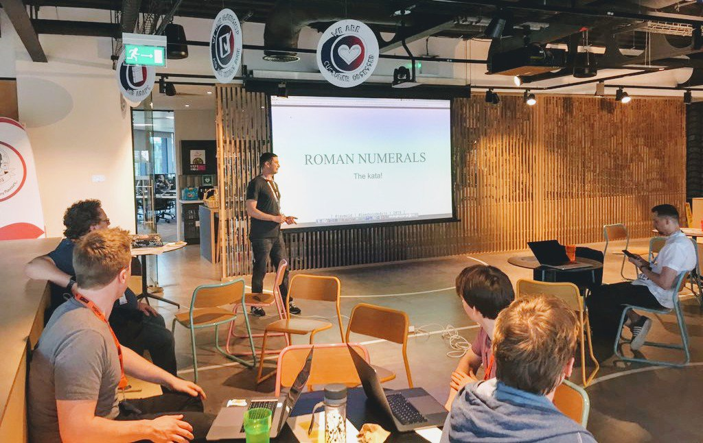

The Roman Numerals Kata - @LeedsCodeDojo
 
The Leeds Code Dojo is a meet-up group dedicated to programing, it focusses on small coding challenges, where you pair up and have a go at solving the challenge(s).
I recently had a go at setting one of the challenges, so I picked the very enjoyable Roman Numeral Kata (You can find this kata in the Coding Dojo Handbook.
Roman Numerals?!
If you are unfamiliar, Roman Numerals were used in Ancient Rome (8th century BC) and continued to be used until the late middle ages (1000 - 1250 AD). You still see them used today on things like BBC show credits and, erm… on the face of clocks.
The Romans used a combination of Latin alphabet characters (I, V, X, L, C, D, M) to represent numbers, it might seem a little odd compared to our modern arabic numbers system, but it was pretty good for the time and was the most used number system in Europe for over M years (that’s 1000 years).
The Challenge
The challenge is to write some code that takes an integer, and returns the equivalent roman numeral.
“Easy!, this should be a simple translation?”
Not so fast! There are some things that might make it a little more complicated than you might first imagine.
Firstly, it’s not a simple translation because there are only seven characters.
Secondly, there’s the repetition of characters to think about. 1, 2, 3 becomes I, II, III
Thirdly, when there’s no repetition, there’s often this weird subtraction and additive notation:
* 5 is V * but 4 is IV - (or 1 before 5). * 6 is then VI.
“Ah”
Suffice to say it’s not without a challenge
Fancy a go?
The kata is outlined here: https://github.com/LeedsCodeDojo/RomanNumerals
There’s a readme, and powerpoint presentation where I introduce and outline the challenge, (feel free to use this for your dojo).
My First attempt
I was TDD’ing this, so this initial attempt came about a little quicker than I had first imagined…
toRoman :: Int -> String
toRoman n
| n == 0 = ""
| n `div` 1000 > 0 = 'M': toRoman (n-1000)
| n `div` 900 > 0 = 'C':'M':toRoman (n-900)
| n `div` 500 > 0 = 'D': toRoman (n-500)
| n `div` 400 > 0 = 'C':'D':toRoman (n-400)
| n `div` 100 > 0 = 'C': toRoman (n-100)
| n `div` 90 > 0 = 'X':'C':toRoman (n-90)
| n `div` 50 > 0 = 'L': toRoman (n-50)
| n `div` 40 > 0 = 'X':'L':toRoman (n-40)
| n `div` 10 > 0 = 'X': toRoman (n-10)
| n `div` 9 > 0 = 'I':'X':toRoman (n-9)
| n `div` 5 > 0 = 'V': toRoman (n-5)
| n `div` 4 > 0 = 'I':'V':toRoman (n-4)
| otherwise = 'I': toRoman (n-1)I think there’s pros and cons of this algorithm:
+ The algorithm is pretty clear.
But…
- There’s a lot of repeated code.
- Some operations are performed multiple times when they could be done just once.
- We could capture the quotient and use that to determine number of numerals, instead of subtracting and recursing.
- Hard to add another numeral without changing algorithm.
Luckily we have a full suite of tests now, so it’s easy to improve it or write something different.
Removing the duplicate code:
toRoman2 :: Int -> String
toRoman2 n = snd $ foldr f (n, "") numerals
where f (i, numeral) (n', str) = let (q, r) = n' `divMod` i
in (r, str <> concat (replicate q numeral))
numerals :: [(Int, String)]
numerals = [(1,"I"),(4,"IV"),(5,"V"),(9,"IX"),(10,"X"),(40,"XL"),(50,"L"),
(90,"XC"),(100,"C"),(400,"CD"),(500,"D"),(900,"CM"),(1000,"M")]Well the repetition is gone, and it’s easy to add new numeral without changing algorithm should you find a time-machine and change the rules.
However I don’t think the algorithm is particularly clear, especially if you’re unfamiliar with FP or Haskell.
Another go?
Let’s use that associative map of numerals from above, and filter out the numbers we don’t need and then use co-recursion again to join together a string of numerals…
toRoman4 :: Int -> String
toRoman4 0 = ""
toRoman4 n = numeral ++ toRoman4 (n - numeralValue)
where (numeralValue, numeral) = head $ filter ((<=n) . fst) $ reverse numeralsIt’s short! Maybe it’s a bit clearer than the above? I don’t think it’s particularly efficient for a few reasons.
Other interesting solutions we came across…
The solutions I could come up with only used maths. Let’s take a look at some other interesting algorithms.
Here’s one highlighted by Kevlin Henney in one of his talks (if I find it again I will post the link here!)
If you imagine the algorithm starts with a straight translation. For example: 2547 gets initially translated to a string of IIIII…etc repeated 2547 times.
After that you just perform a string substitution for the replacement numerals!
toRoman3 :: Int -> String
toRoman3 n = n & flip replicate 'I' & replace "IIIII" "V" &
replace "IIII" "IV" &
replace "VV" "X" &
replace "VIV" "IX" &
replace "XXXXX" "L" &
replace "XXXX" "XL" &
replace "LL" "C" &
replace "LXL" "XC" &
replace "CCCCC" "D" &
replace "CCCC" "CD" &
replace "DD" "M" &
replace "DCD" "CM"It’s really not very efficient, but it is a very amusing and creative solution.
This one is pretty interesting as it doesn’t use any maths or string substitution, but uses a look up function, which is applied to the individual numbers of the n we need to translate.
getNum :: Char -> (Char, Char, Char) -> String
getNum n (low, mid, high) = case n of '1' -> [low]
'2' -> [low, low]
'3' -> [low, low, low]
'4' -> [low, mid]
'5' -> [mid]
'6' -> [mid, low]
'7' -> [mid, low, low]
'8' -> [mid, low, low, low]
'9' -> [low, high]
_ -> []
toRoman5 :: Int -> String
toRoman5 n = let digits = show n
in mconcat $ zipWith getNum digits $ drop (4 - length digits) trips
trips :: [(Char, Char, Char)]
trips = [ ('M', ' ', ' ') -- 1000 - ?
, ('C', 'D', 'M') -- 100 - 1000
, ('X', 'L', 'C') -- 10 - 100
, ('I', 'V', 'X') -- 1-10
]